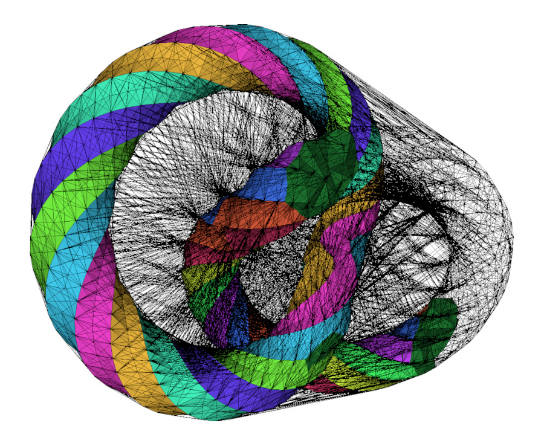
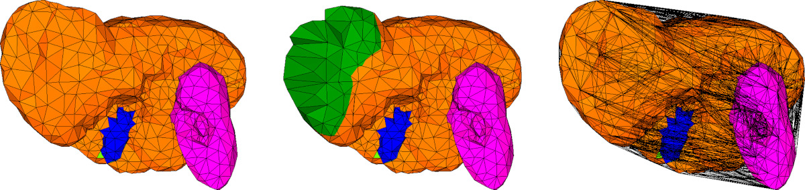

- Authors
- Pierre Alliez, Clément Jamin, Laurent Rineau, Stéphane Tayeb, Jane Tournois, Mariette Yvinec

Mesh Complex
This package is devoted to the representation of 3-Dimensional simplicial mesh data structures.
A 3D simplicial complex is composed of points, line segments, triangles, tetrahedra, and their corresponding combinatorial description (namely vertices, edges, faces and cells). CGAL provides 3D triangulations, that describe both the geometry and connectivity of a 3D simplicial complex, implemented in the the 3D Triangulations and 3D Triangulation Data Structure packages.
We introduce the concept of mesh complex, that encodes extra information on top of a 3D triangulation to represent a valid simplicial complex. A mesh complex describes four subcomplexes of simplices of the support 3D triangulation, per dimension from 0 to 3:
- corner vertices (0D),
- feature edges (1D),
- surface facets (2D),
- domain cells (3D). See Figure Figure 58.2.
The concept MeshComplex_3InTriangulation_3 is a data structure devised to represent these three-dimensional complexes embedded in a Triangulation_3.

Examples
From Tetrahedron Soup to Triangulation_3
In the first example of this section, we build a random Delaunay_triangulation_3 and use it to build a consistent though connectivity-free tetrahedron soup. The tetrahedron soup is then put back together in a CGAL::Tetrahedral_remeshing::Remeshing_triangulation_3 before being set as the reference triangulation of a Mesh_complex_3_in_triangulation_3.
File SMDS_3/tetrahedron_soup_to_c3t3_example.cpp
#include <CGAL/Exact_predicates_inexact_constructions_kernel.h>
#include <CGAL/Delaunay_triangulation_3.h>
#include <CGAL/point_generators_3.h>
#include <CGAL/Tetrahedral_remeshing/Remeshing_triangulation_3.h>
#include <CGAL/Mesh_complex_3_in_triangulation_3.h>
#include <CGAL/tetrahedron_soup_to_triangulation_3.h>
#include <CGAL/IO/File_medit.h>
#include <vector>
#include <unordered_map>
using Point_3 = K::Point_3;
using Tetrahedron_3 = K::Tetrahedron_3;
using Vertex_handle = DT3::Vertex_handle;
using Subdomain_index = C3T3::Subdomain_index;
int main(int , char* [])
{
const int nbv = 100;
DT3 delaunay;
std::unordered_map<Vertex_handle, int> v2i;
std::vector<DT3::Point> points(nbv);
std::vector<Tetrahedron_3> tetrahedra;
std::vector<std::array<int, 4> > tets_by_indices;
std::vector< Subdomain_index> subdomains;
CGAL::Random_points_in_cube_3<Point_3> randp(2.);
int i = 0;
while (i < nbv)
{
points[i] = *randp++;
Vertex_handle v = delaunay.insert(points[i]);
v2i[v] = i++;
}
tetrahedra.reserve(delaunay.number_of_finite_cells());
tets_by_indices.reserve(delaunay.number_of_finite_cells());
subdomains.reserve(delaunay.number_of_finite_cells());
for (DT3::Cell_handle c : delaunay.finite_cell_handles())
{
tetrahedra.push_back(delaunay.tetrahedron(c));
tets_by_indices.push_back( { v2i.at(c->vertex(0)),
v2i.at(c->vertex(1)),
v2i.at(c->vertex(2)),
v2i.at(c->vertex(3)) } );
subdomains.push_back(Subdomain_index(1));
}
Remeshing_triangulation tr
= CGAL::tetrahedron_soup_to_triangulation_3<Remeshing_triangulation>(tetrahedra);
Remeshing_triangulation tr2
= CGAL::tetrahedron_soup_to_triangulation_3<Remeshing_triangulation>(
points, tets_by_indices,
CGAL::parameters::subdomain_indices(std::cref(subdomains)));
C3T3 c3t3;
c3t3.triangulation() = tr;
std::ofstream ofs("c3t3_output.mesh");
return EXIT_SUCCESS;
}
Input/Output Example
The example below illustrates how to use the IO functions for reading and writing a triangulation with the Medit file format (See [1] for a comprehensive description of this file format.).
File SMDS_3/c3t3_example.cpp
#include <CGAL/Exact_predicates_inexact_constructions_kernel.h>
#include <CGAL/Triangulation_3.h>
#include <CGAL/Triangulation_data_structure_3.h>
#include <CGAL/Simplicial_mesh_cell_base_3.h>
#include <CGAL/Simplicial_mesh_vertex_base_3.h>
#include <CGAL/Mesh_complex_3_in_triangulation_3.h>
#include <CGAL/tetrahedral_remeshing.h>
#include <CGAL/tags.h>
#include <CGAL/IO/File_medit.h>
#include <fstream>
using Subdomain_index = int;
using Surface_patch_index = unsigned char;
using Curve_index = char;
using Corner_index = short;
Curve_index, Corner_index>;
int main(int argc, char* argv[])
{
std::string filename = (argc > 1) ? std::string(argv[1])
Triangulation tr;
std::ifstream is(filename, std::ios_base::in);
std::ofstream os("after_remeshing.mesh");
os.close();
Triangulation tr2;
std::ifstream is2("after_remeshing.mesh");
is2.close();
return EXIT_SUCCESS;
}
More Examples In Other Packages
The Mesh_complex_3_in_triangulation_3 is widely used in the 3D Mesh Generation package. Many more examples can be found in its Examples section.
The package Tetrahedral Remeshing also makes use of the Mesh_complex_3_in_triangulation_3 since it serves as a post-processing for tetrahedral mesh generation. Some examples can be found in the Examples section.
Implementation History
The code of the MeshComplex_3InTriangulation_3 and its variants were initially part of the package 3D Mesh Generation. With the meshing and remeshing processes becoming more versatile, it was moved to its own package in the release 5.6 of CGAL.


 1.8.13
1.8.13